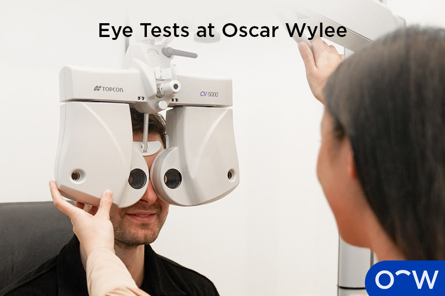

What is the Pupil?
{Content}
What is the Colour of the Pupil?
{Content}
Does the Colour of the Pupil Change?
{Content}
Where is the Pupil Located Inside the Eye?
{Content}

What is the Function of the Pupil in the Eye?
{Content}
How Does the Pupil Help the Human Eye See?
{Content}
Is the Pupil Sensitive to Light?
{Content}
What are the Pupil-Related Eye Problems?
{Content}
- Anisocoria: Anisocoria is a condition where the pupils are uneven in size. Anisocoria may only be temporary or can be caused by serious conditions. This eye condition may cause vision issues and a sensitivity to light.
What is the Role of an Optometrist in Diagnosing Pupil-Related Conditions?
{Content}
Is the Pupil the Most Commonly Damaged Part of the Eye?
{Content}
What are the Different Ways to Take Care of the Pupil?
{Content}
- Book regular eye tests: Booking regular eye tests is very important in taking care of your overall eye health including the health of your pupils. Eye tests allow optometrists to monitor the health of your eye and detect eye diseases.
What is the Importance of a Regular Eye Test for the Pupil?
{Content}
How can Oscar Wylee Help Take Care of Your Pupil?
{Content}
Why are Eye Drops Used on the Pupil?
{Content}

Can the Pupil Repair Itself?
{Content}
What is the Difference Between the Pupil and the Iris?
{Content}